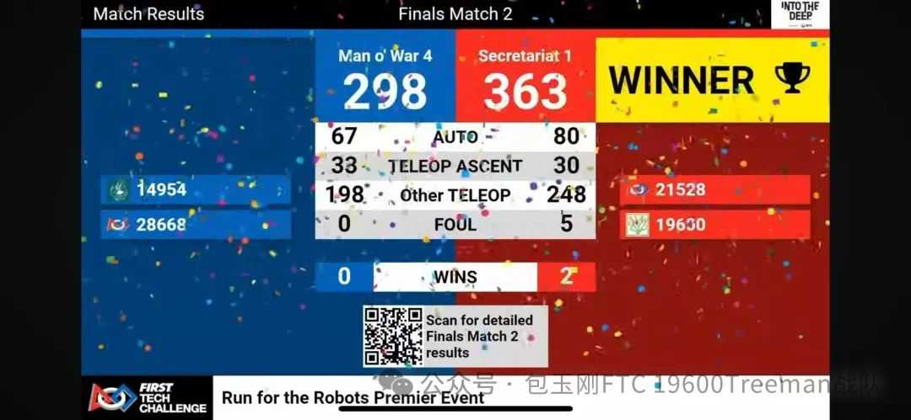
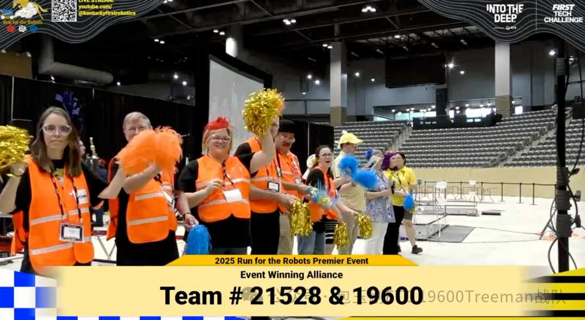
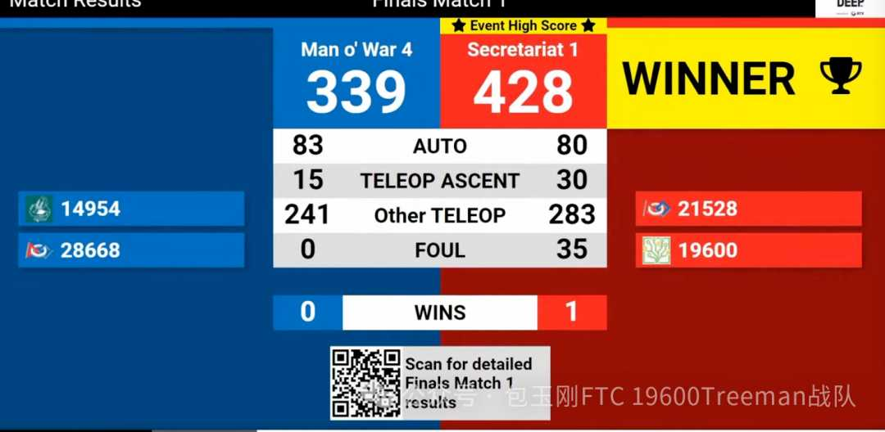
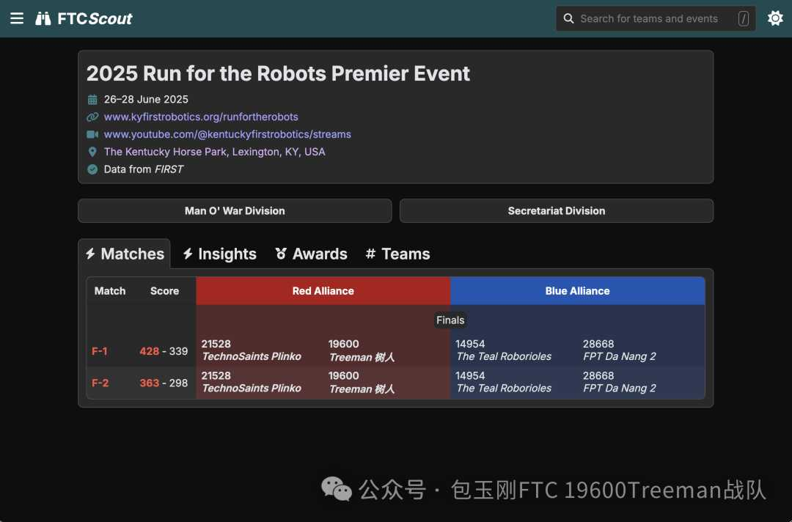
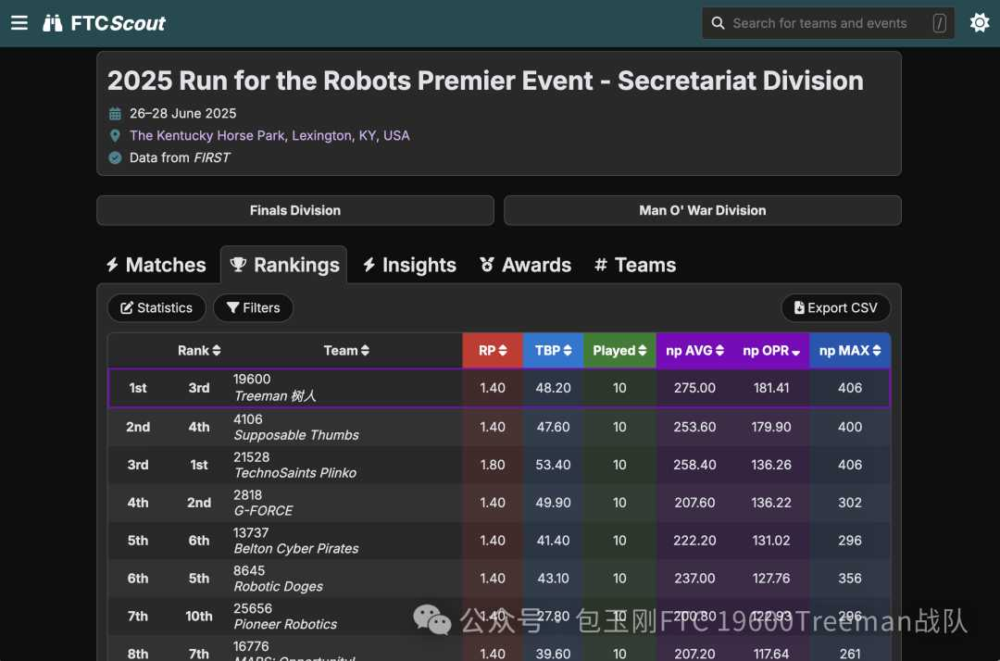
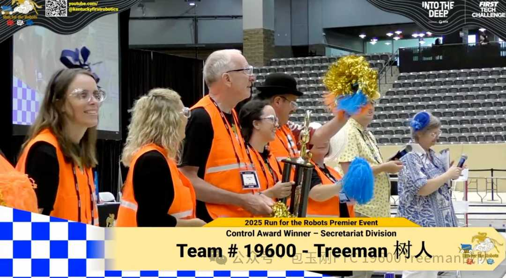
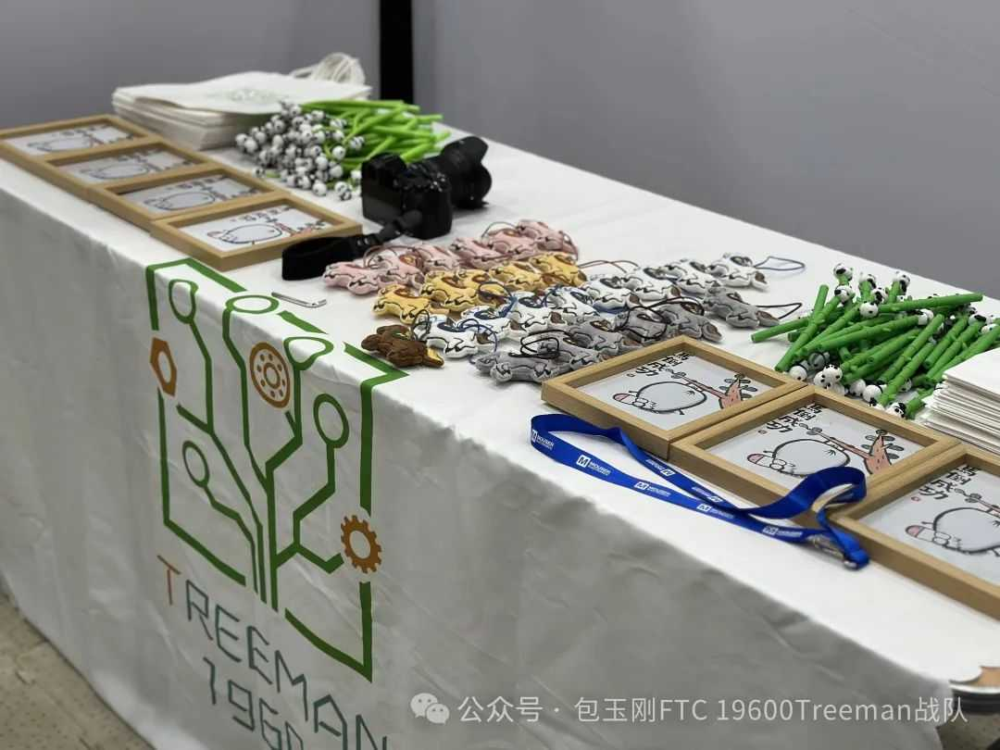
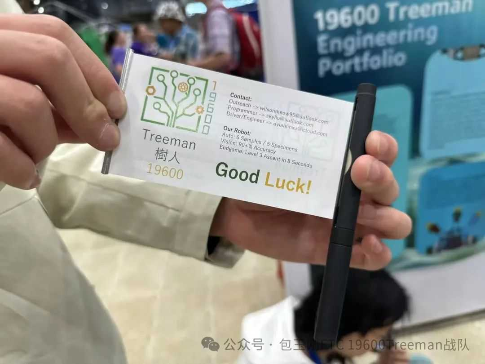
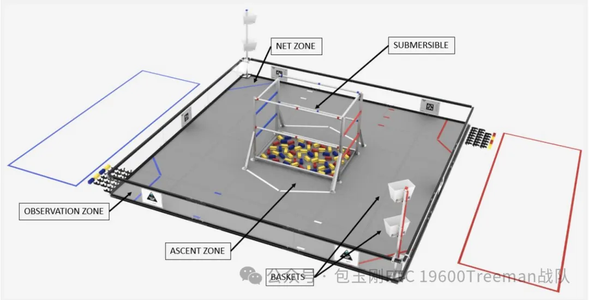
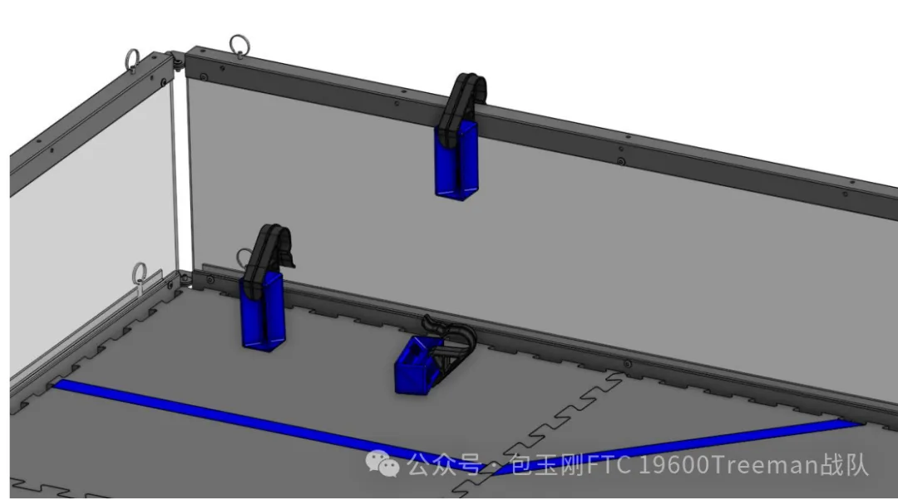

最新消息
树人19600
树人19600最新消息
发布日期: 2025/07/01
超级联赛是First 主办的与世锦赛平级的最高等级正式赛事。我们包校树人19600战队于6/25号代表中国赴往美国肯塔基州参加超级联赛，与来自世界各地的55支顶尖队伍同台竞技。


最终树人19600与21528队伍作为冠军联盟，一齐斩获Secretariat分区冠军，并代表Secretariat出战对阵Man'o War赛区再次取得总区冠军。19600战队成为了是中国FTC赛事历史上第一支拿到世界级赛事的冠军荣耀的队伍。




凭借操作手的刻苦训练以及机器人自动阶段与手动阶段的优异性能，19600战队在参加的15场比赛中共达到了4次400分以上的成绩，整场赛事的前6场最高分也都被树人收入囊中。同时，19600战队还成为了全场最高的平均手动阶段分数的拥有者，场均平均分也位列第一。




在夺得冠军的同时，19600还凭借场上场下优异的技术控制能力，在pit区答辩中从工程设计与程序架构多个角度折服了裁判，获得了本场超级联赛的控制奖。19600成功为包校夺得了两只代表荣誉的奖杯！



工程方面，我们独特的机器人设计吸引来了FTC官方零件赞助商GoBilda官方人员的围观，在展示了我们机器人一系列创新实用的设计之后，19600收获了GoBilda的官方认可，并获赠了GoBilda的贴纸以及吊带。

编程方面，在见识到我们机器稳定的6块自动，听到评委对19600控制奖的颁奖词后，来自巴西的获得了启发奖的队伍23504 spacetech队伍前来我们pit区寻求Limelight 3A视觉模块的经验。多队教练也前来交流底盘调PID，公式推导与运用方面的经验。
外联方面，除开19600在赛前举办的诸如She Power, Coast to Coast, Unify to Diversify等扩大First影响力，促进国际联结的国际级别活动之外，赛场中我们还在pit区准备了许多来自中国的外联物资，弘扬了中国传统文化。我们还与赛场上的国际队伍留下了邮箱联系方式，以促进日后的紧密联结。


总之，19600树人战队已经正式化茧成蝶成为了一支国际强队，能代表包玉刚在世界级正赛赛场上夺得多种荣耀。19600编程，工程，外联各方面的实力也展现了队员们的专业能力，同时弘扬了First精神——Gracious Professionalism。
同时，19600树人不会驻足于一次的荣耀中。放眼未来，树人战队会继续深耕，场上场外全面发展，在世界上代表包玉刚夺得更多耀眼的成绩！
发布日期: 2024/09/28
在本月初，First Tech Challenge 官方发布了新一届赛季手册，意味着新一届FTC挑战赛《深海采样》的开始。
本届挑战赛除去一年一度的轮换比赛模式与上一年产生的变化外，规则上也产生了相当大的变化。
在介绍本届《深海采样》具体内容前，笔者将先选些较为重要的赛制变化进行着重分享。
1）决赛（淘汰赛）时期，联盟数量增多，联盟内队伍数量减少到2队。同时采用双败淘汰制，输了一场比赛的联盟可以进入败者组继续比赛。
2）最终国赛时晋级世锦赛的顺位变为启发一，冠军联盟队长，以及冠军联盟盟友。启发奖第二名不再晋级世锦赛。
3）小判变为5分，大判变为15分。
4）控制奖无需再单独提交申请表单。
另，今年开始，FTC官方对队伍在赛场上的素质表现进行了规定，如果出现攻击，威胁等不文明行为的话，参与者可能会被处罚甚至禁赛。
---
本届FTC挑战赛的主题为《深海采样》。场地的设置如下图：

场地中央处的结构内堆放着样本，这些样本将成为今年主要的得分方式。机器人可以从结构内拣取属于自己颜色的样本，或者黄色的通用样本。样本除了存在于结构内，在场地上由白色胶带标出的6处地点将在比赛开始前放上6块黄色样本，红色/蓝色胶带处也将存在各3片对应颜色的样本。
队伍的机器人起始于靠自身颜色一片的墙边。黄色样本应被放置在在各队伍左手边的篮子处。地面上得2分，低框4分，高框8分。
自己队伍的颜色的样本应先辈运送到右手边胶带框处的区域后，人类玩家再将黑色钩子与样本结合，变成标本。


人玩投影退出场地后由机器人将标本挂在场地中央结构对应颜色的衍杆上。低杆得6分，高杆得10分。
相较于往届比赛，本轮《深海采样》的自动阶段并没有停靠外的特殊得分方式。自动阶段时，机器人可以预装载一个组装好的标本或者一个未组装的样本。自动阶段结束后可贴着衍杆/本侧场地的角停靠，得3分。剩余的得分方式都与手动阶段无异。
结束阶段时，机器人可以选择停靠或者在白色胶带勾出的区域内爬升。停靠3分，爬到第一根杆子上得15分，第二根杆子得30分。
以上就是本次《深海采样》的大致规则了，祝愿所有参赛队伍都能拿到心仪的战绩！